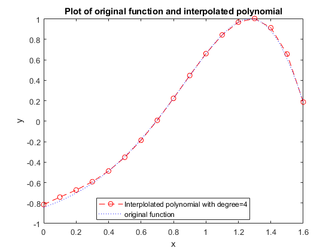

clc;
clear all;
x=[0 0.4 0.8 1.2 1.6];
y=[-0.8145 -0.4866 0.2236 0.9687 0.1874];
p=polyfit(x,y,4);
x1=0:0.1:1.6;
f1 = polyval(p,x1);
plot(x1,f1,'--or');
hold on;
fplot(@(x) sin(exp(x)-2),[0 1.6],'b:');
xlabel('x');
ylabel('y');
legend('Interplolated polynomial with degree=4','original function','Location','Best');
title('Plot of original function and interpolated polynomial');
q = polyint(p);
I = diff(polyval(q,[0 1.6]));
display('Integration result using polyint MATLAB function');
fprintf('The result of integration of interpolating polynomial over the domain is %f\n\n\n',I);
q_hand=[-0.39514 0.959275 -0.399 0.40555 -0.8145 0];
I = diff(polyval(q_hand,[0 1.6]));
display('Evaluation of integration by hand and limit subsititution using polyval');
fprintf('The result of integration of interpolating polynomial over the domain is %f\n',I);
Integration result using polyint MATLAB function
The result of integration of interpolating polynomial over the domain is 0.243924
Evaluation of integration by hand and limit subsititution using polyval
The result of integration of interpolating polynomial over the domain is 0.244065
